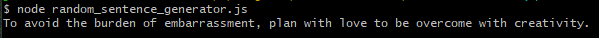

Hello and welcome to my portfolio website!
Sorry for how basic it is currently. I am an aspiring full-stack engineer learning through Codecademy!
I am a student in the third and final year of a Bachelor of
Information Technology at the University of Southern Queensland, majoring in
Networking and Security, and Applied Computer Science. Alongside my degree,
I am undertaking a Full Stack Engineering course on Codecademy, expanding
my skills in web development.
Projects
I have several offline projects, mostly static web pages. Unfortunatly, I currently only have one other
project on GitHub.
Random Fortune - JavaScript
This is a portfolio project that was created as part of the Codecademy Full-stack engineering career
course.
This simple program logs a somewhat random fortune to the console. There are four words that are
randomly selected from four seperate random arrays.
The program was constructed this way instead of being completly random so that the sentence produced
makes sense

The random words in the example: "embrassment", "plan", "love", and "creativity".
It can also be expanded upon in the future via the following:
Adding different sentence foundations for the words to be inserted in. These foundations would
be
randomly selected.
Adding more words to be selected in the arrays
Making more of the words random while ensuring the sentence still makes sense
Skills
I am currently proficient in:
HTML
CSS
JavaScript
SQL
I am still working through Codecademy and my Bachelor and therefore, these skills are still being
improved
upon.